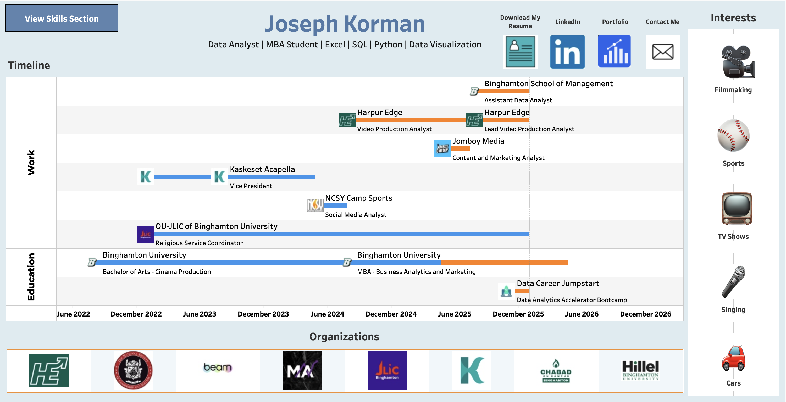
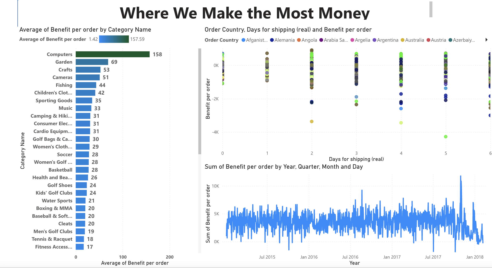
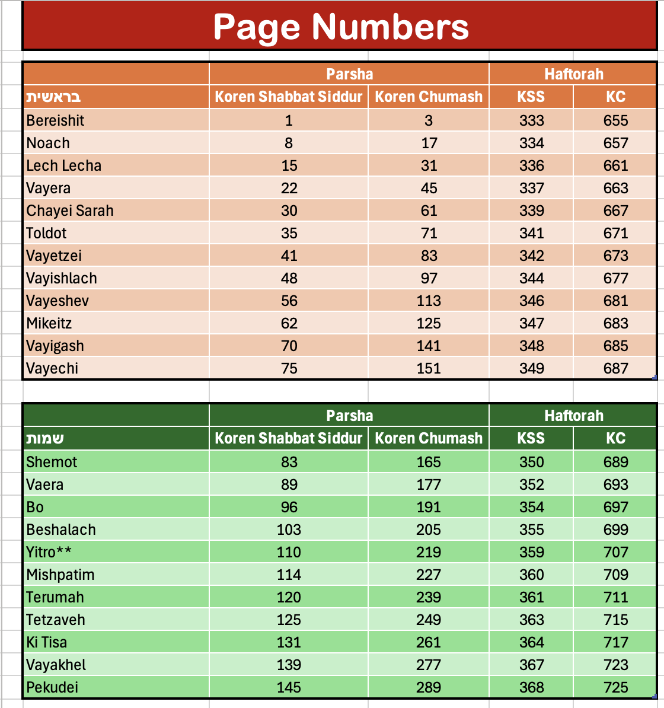
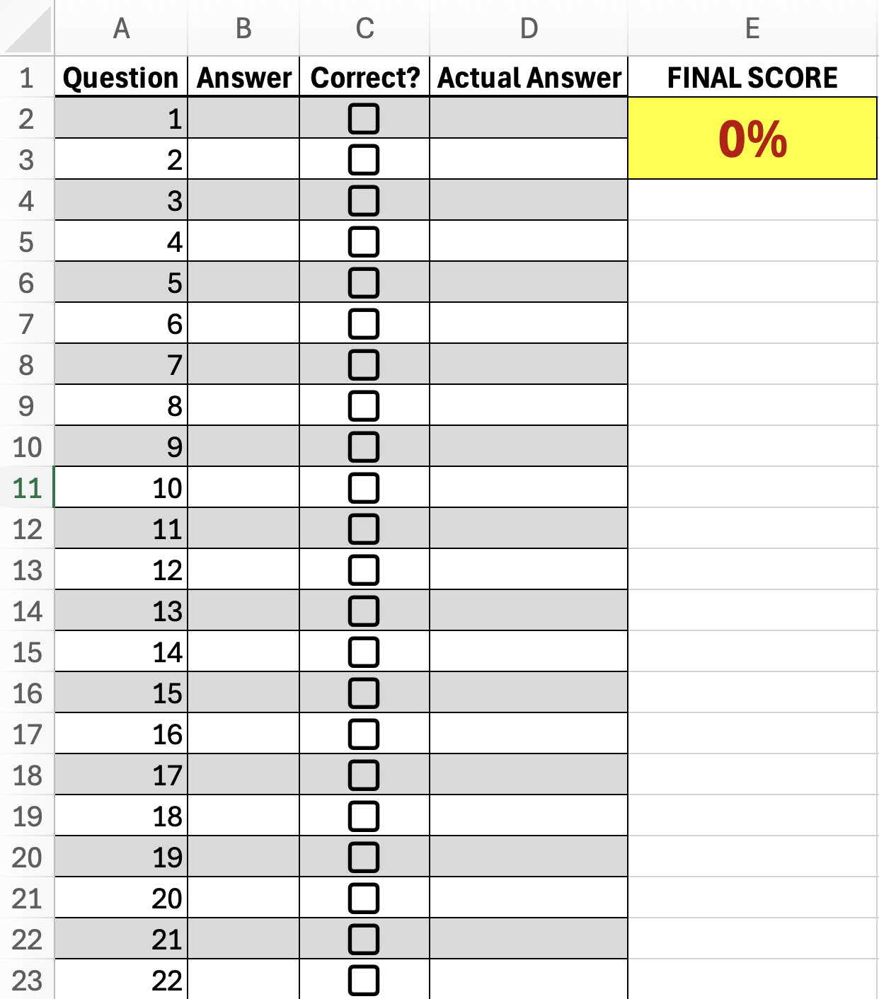
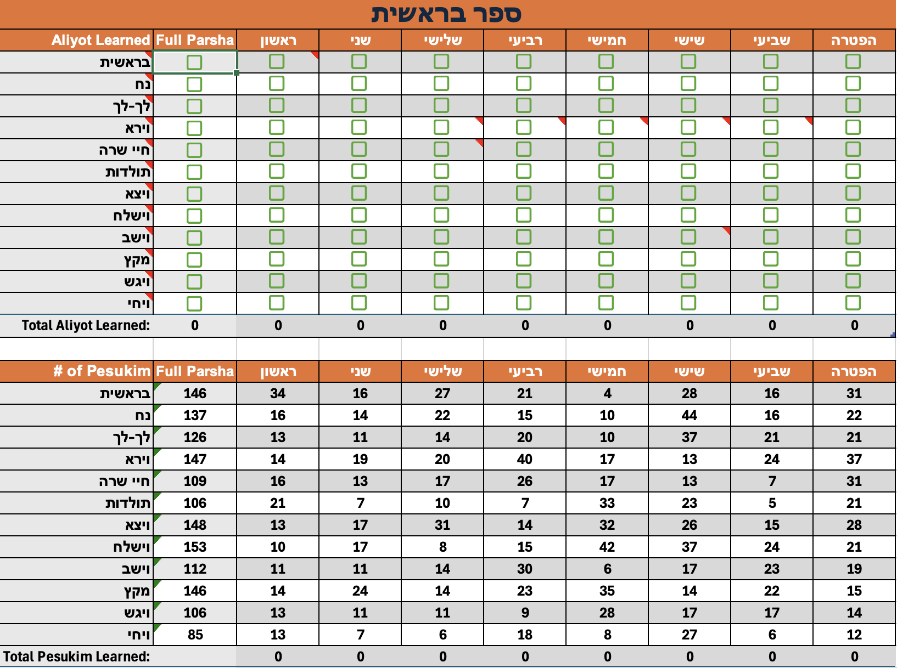
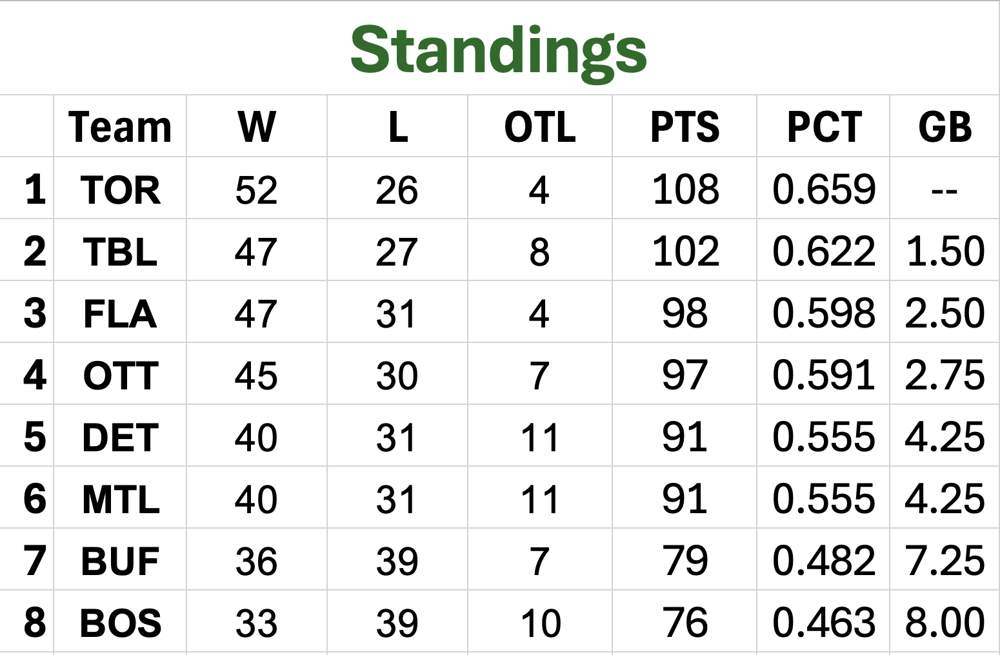
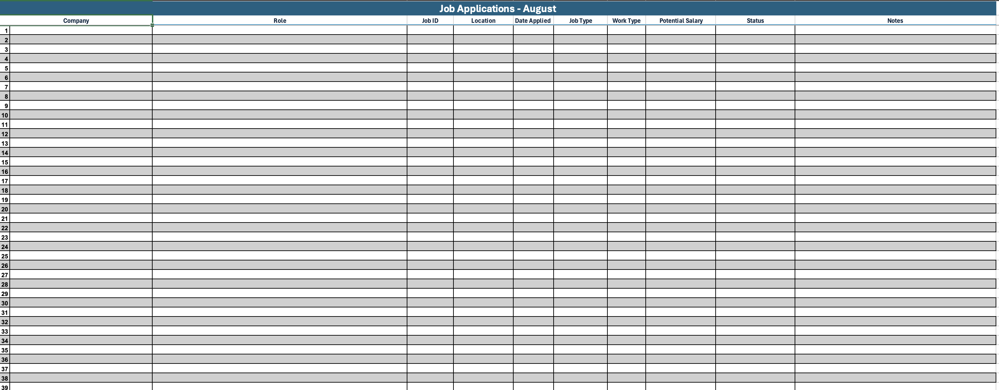
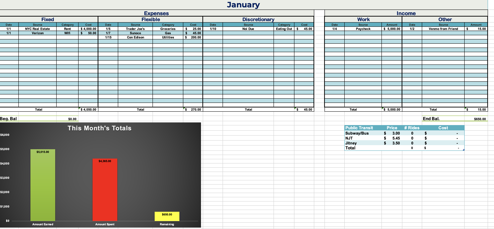

Starbucks Cluster Analysis
A data-driven marketing analysis using segmentation and RFM analysis to identify high-value customer segments and optimize Starbucks' marketing campaigns. This project reveals unexpected purchasing patterns, seasonal trends, and strategic recommendations for targeted advertising.
View Project
My Resume Dashboard
An interactive Tableau dashboard showcasing my professional experience, skills, and achievements in a visually engaging format. This dashboard provides a comprehensive overview of my background in data analytics, business intelligence, and data visualization.
View Dashboard
Mets Analysis: Building a Smarter Roster
An analytical study using Tableau to identify roster weaknesses and offseason improvement opportunities for the New York Mets. This data-driven analysis explores offensive performance, pitching performance, age trends, and potential player acquisitions using 2025 MLB season statistics.
View Project
Hospital SQL Analysis
Using SQL to identify over $100K in potential cost savings while ensuring equitable patient care and efficient resource use. This analysis explores hospital bed efficiency, cost drivers, treatment equity, and emergency care success stories.
View Project
When Data Saves You From a Lawsuit: A Health Insurance Investigation
An analytical study using R to investigate potential gender discrimination in health insurance pricing. Using correlations, hypothesis testing, and multivariable regression, this project demonstrates how proper statistical analysis can protect organizations from false accusations and reveal the true drivers of insurance costs.
View Article
World Bank SQL Analysis
A comprehensive SQL analysis of World Bank funding data, analyzing over 1.4 million records to identify which countries receive the most funding, which owe the most, and uncovering surprising patterns in global finance and repayment behaviors.
View Project
Employee Attrition Prevention Analysis
A comprehensive data mining project analyzing factors that lead to employee attrition and identifying strategies to prevent turnover. Using logistic regression and data visualization, this project reveals key insights about work-life balance, overtime, travel frequency, and demographic factors that impact employee retention.
View Project
Massachusetts Education Dashboard
An interactive Tableau dashboard analyzing graduation rates and college attendance across Massachusetts schools, providing insights into educational outcomes and trends.
View Dashboard
Sword Project - Power BI Dashboard
An interactive Power BI dashboard providing comprehensive data visualization and analysis.
View Dashboard
Sandy Alcantara Dashboard
This is an interactive data visualization dashboard built with Python (Streamlit, Pandas, Plotly, NumPy) and Excel (data collection and cleaning) that analyzes Sandy Alcantara's pitching performance metrics and statistics over the past 5 years.
View Dashboard
Froth & Fortune: Iron Mining Analysis
An investigative data story analyzing iron concentrate levels at a flotation plant on June 1, 2017. Using Python (Pandas, Matplotlib, Seaborn), this project explores how hourly bubbles reveal hidden patterns in iron purity through exploratory visualizations, correlation analysis, and time series plots.
View Article
DoorDash Marketing Analysis
A data-driven evaluation of DoorDash's marketing campaign, revealing who buys, how much they spend, and what drives conversions.
View Project
Page Numbers: Koren
Reference list of what page the various Torah portions begin in both the Koren Chumash and the Koren Shabbat Siddur.
Download Template
Grade Yourself
Got a multiple-choice exam coming up? Use this sheet to test yourself on the material and see your grade.
Download Template
Leining Record
Track your Torah learning progress with check marks and view statistics based on your progress.
Download Template
Sports Standings
Sports team standings and statistics tracking spreadsheet. Useful for anyone in need of standings for their league.
Download Template
Job Application Record
Comprehensive tracking system for job applications with status updates and follow-up reminders.
Download Template
Yearly Budget
Personal yearly budget tracking and planning spreadsheet with automated calculations and visual charts.
Download Template